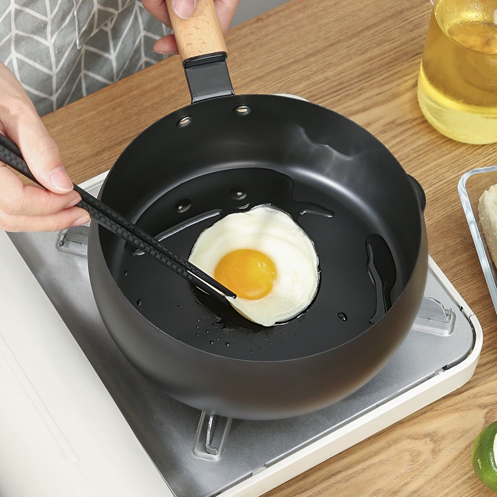
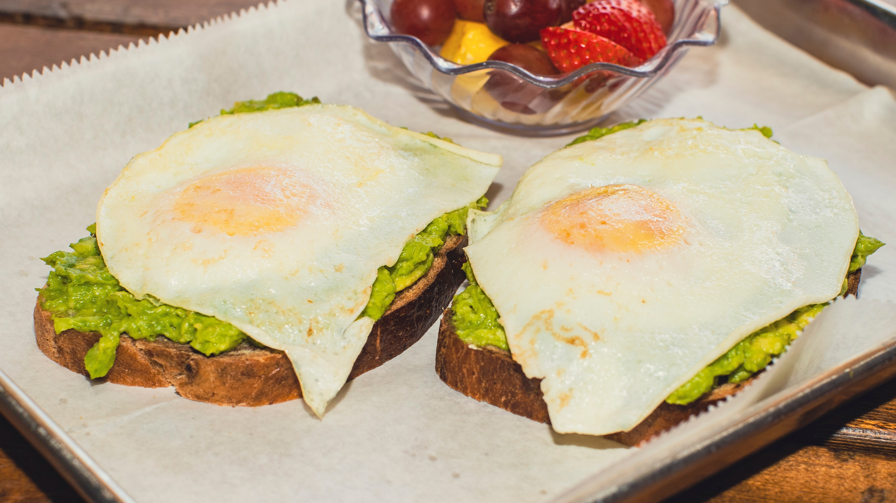
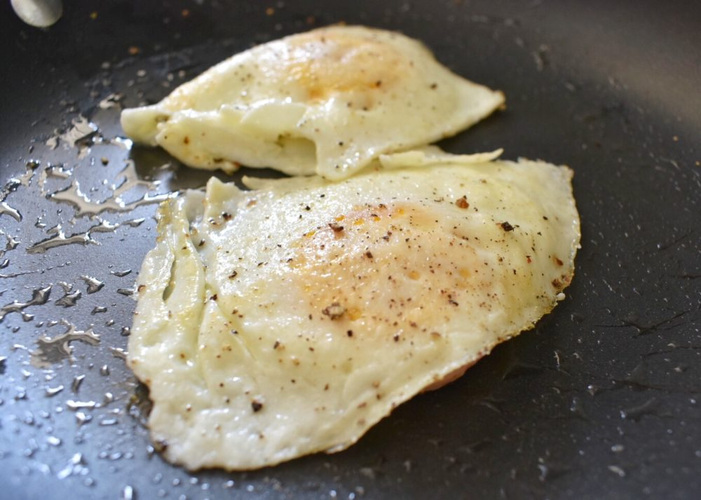

Prep work
Pan Material
Eggs
Oil
Seasoning
Spatula
The pan I recommend for frying eggs is the nonstick skillet. This pan works great for frying eggs as the eggs do not stick to the pan while cooking. Additionally a cast iron skillet or stainless steel pan can be used instead if you do not have a nonstick skillet.
For the eggs themselves, I recommend purchasing whatever eggs you have a preference for. I usually go for the large grade A white eggs but there are plenty of varieties of eggs. Some examples of the varieties include free range, brown, cage free, and organic. If you are not sure which one to pick, then try out different ones and experiment. See what tastes best.
The oil you choose to cook with is also a preference. I like to use about a tablespoon of vegetable oil. You can also try using a tablespoon of butter or canola oil instead of vegetable oil.
Seasoning is optional.I like to use a teaspoon of creole seasoning mix. Salt and pepper also goes well with eggs.
A plastic, wooden, or steel spatula will be needed when cooking your eggs.
Cooking
Sunny-side up

Over-easy

Over-medium

There are several ways to fry an egg and each method differs slightly. For each method listed below, please click on the provided image for detailed instructions on each variation.